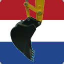

De KLIC Viewer is ontwikkeld om snel het resultaat van een KLIC melding te kunnen bekijken en begrijpen.
Dit is de 1e versie van de KLIC Viewer na de upgrade van QGIS 3 naar QGIS 4. Maar helaas werkt nog niet alles voorheen. Het inlezen van een KLIC levering lukt wel en ook inzoomen op de KLIC Levering met [Ga Naar...]
Wat werkt er nog niet goed.
Let op! Deze versie ondersteund ook nog niet volledig de laatste versie van KLIC leveringen. Weliswaar worden nog wel alle kabels en leidingen op de kaart getoond, maar niet alle toegevoegde brieven! Met name de brief Eis Voorzorgsmaatregel en de detailtekeningen van de huisaansluitingen ontbreken nog in deze versie. Die zullen op een later moment alsnog worden toegevoegd!
Het is een goed alternatief voor de gratis KLIC viewer die wordt aangeboden door het Kadaster, via https://zakelijk.kadaster.nl/klic-viewer.
Doordat deze viewer onderdeel is van een echt GIS systeem, kun je binnen deze Viewer ook afstanden opmeten en ontwerptekeningen als laag toevoegen, enzovoorts.
In Gebruik wordt het gebruik van de KLIC Viewer verder uitgelegd.Eerst zal men moeten beschikken over een KLIC levering. Het resultaat van een melding gedaan in het kader van de wet WION noemen we in het vervolg een KLIC levering. Zie ook Over WION hoe je deze kunt verkrijgen. Wanneer je de KLIC levering hebt ontvangen, zal het eerst een ingepakt zip-archief zijn.
De KLIC Viewer heeft voorlopig twee tabbladen, Berichten en Opties. Na het opstarten opent deze altijd eerst het tabblad Berichten want eerst dient een KLIC levering te worden ingelezen.
Gebruik de knop [Open Folder...] wanneer u een al uitgepakt
KLIC bericht heeft. U kunt ook de Alt-toets gevolgd door de O-toets
gebruiken. Zo'n combinatie zal hierna worden afgekort tot Alt-O.
U kunt hiermee de folder selecteren die de KLIC levering bevat.
Wanneer u in het tabblad Opties al de standaard folder heeft
ingesteld waar KLIC leveringen normaal gesproken gevonden worden, dan
is deze snel gevonden.
Na selectie en op [OK] te hebben gedrukt gebeurt het volgende:
U kunt het zip bestand eerst zelf uitpakken, maar u kunt ook de knop
[Open Zip-bestand...] proberen of Alt-Z, de Alt-toets gevolgd
door de Z-toets.
Via deze functie kunt u het Zip-bestand selecteren die het ingepakte
KLIC bericht bevat. Na selectie pakt deze eerst het KLIC bericht uit en
laad het vervolgens in QGIS.
werkt deze, dan hoeft U per bericht deze functie slechts 1-maal te gebruiken,
gebruik daarna de functie [Open Folder...] dan wordt het KLIC bericht
sneller geladen.
Wanneer de lijst met PDF Bijlagen gevuld is kunnen deze geselecteerd en
geopend worden met de knop [Open bijlage(n)]. Wanneer de lijst met
PDF bijlagen geselecteerd is, kun je door de Ctrl-toets samen met de A-toets
tegelijk in te drukken, ineens alle bijlagen selecteren en vervolgens openen
met de knop [Open bijlage(n)] of Alt-B.
Daarnaast kunt u ook een bijlage direkt openen door in
de lijst van bijlages op een bijlage te dubbelklikken.
Met de knop [Ga Naar] of Alt-G, verplaatst u
de kaart binnen QGIS naar de grens van het gebied van het KLIC bericht.
Met de knop [Beste Schaal] of Alt-C krijgt u het bericht, wanneer deze rasterlagen bevat, in de meest perfect mogelijke weergave te zien.
Met de knop [Sluit Bericht] sluit u het bericht en de kaartlagen
zullen eveneens worden verwijderd uit QGIS.
De vector informatie uit een KLIC levering is opgeslagen in zogenaamde tijdelijke memory lagen. Wanneer je het project opslaat en de volgende keer opent zijn deze lagen normaal gesproken verdwenen. Wanneer echter de plugin Memory Layer Saver is geinstalleerd, zullen de tijdelijke memory layers wel worden opgeslagen. Na het openen van het project zullen de lagen dan wel zichtbaar zijn, maar de KLIC viewer zal dan helaas niet worden gevuld met gegevens uit de KLIC levering.
Met de knop [Afsluiten] wordt de KLIC Viewer gesloten, maar wanneer de KLIC Viewer weer wordt geopend dan is de inhoud bewaard gebleven, m.a.w. alle instellingen worden vastgehouden.
Na het laden zijn standaard alle lagen zichtbaar, je kunt lagen onzichtbaar maken door het aankruisvakje voor de kaartlaag te deselecteren. Het kruisje verdwijnt en de geselecteerde laag is niet langer zichtbaar.
Wanneer er een folder wordt geselecteerd die geen geldig KLIC bericht bevat,
krijg je de volgende foutmelding:
Geselecteerde folder bevat geen goed
KLIC bericht of kan niet worden geopend
Vaak blijkt er nog een folder onder de geselecteerde folder te zitten
die wel het KLIC bericht bevat.
Netbeheerders proberen al lange tijd hun kabels/leidingen te beschermen
door diegene die gaan graven te voorzien van informatie. Enkele netbeheerders
besloten een centraal aanmeldingspunt in te richten waar gravers gratis een
melding konden doen. Deze stichting zonder winstdoelmerk heette het KLIC (Kabel
en Leidingen Informatie Centrum).
Grondroerders melden bij het KLIC waar zij wilden gaan graven en het KLIC
stuurde gegevens door naar alle netbeheerders met belang, netbeheerders die
misschien leidingen en/of kabels in het gebied hebben liggen. De netbeheerder
stuurden vervolgens informatie op over de plek waar gegraven werd terug naar de
grondroerder.
Het KLIC was succesvol en men was ervan overtuigd geraakt dat hier echt
graafschade mee voorkomen werd.
Grondroerders ontvingen echter zoveel informatie dat het lastig was om om die gegevens goed te combineren. Verzekeraars keerden bij schade niet meer (zo snel) uit wanneer de grondroerder vooraf geen KLIC-melding had gedaan. Soms werd het doen van een KLIC-melding alleen nog maar gedaan om verzekerd te zijn bij graafschade en werd de informatie niet meer vooraf grondig bestudeert doordat dit te veel tijd in beslag zou nemen.
Sinds 1 oktober 2009 is de wet WION in werking getreden. Deze verplicht de grondroerder tot het doen van een graafmelding centraal bij het Kadaster. De melding is niet gratis meer, per melding wordt er een bedrag van 12 euro in rekening gebracht (peildatum januari 2026). Het Kadaster verzameld van verschillende Netbeheerders de netwerkgegevens en levert deze terug aan de grondroerder. De RDI is de toezichthouder en deze controleert of grondroerders bij mechanische graafwerkzaamheden wel informatie aanvragen en of netbeheerders voldoen aan de verplichting om op tijd de juiste gegevens te verstrekken. De gehanteerde boetes bedragen tienduizenden euro's.
Sinds 2 januari 2019 wordt de informatie aangeleverd waarbij de informatie wordt opgeslagen in een nieuwe interne folderstructuur. Daarnaast wordt er nu ook vector informatie aangeleverd!
Vanaf 2 maart 2020 wordt de informatie geleverd in formaat v2.2 en bevat deze geen leidinginformatie meer in raster formaat. Alleen de achtergrond is nog een rasterlaag.
Er kunnen drie soorten meldingen gedaan worden, elk voor een speciaal doeleinde.
Zowel particulieren als bedrijven kunnen een graafmelding doen. Geregistreerde bedrijven kunnen dit doen via de webservice KLIC-online van het Kadaster. Bij deze dienst kun je op een interactieve kaart aangeven over welk gebied men informatie wenst te ontvangen. Na het doen van een graafmelding ontvangt de aanvrager binnen een dag een email met daarin een link naar de informatie die gedownload dient te worden. Download eerst de gegevens, die in een zip-archief zijn opgeslagen, en pak het zip-archief vervolgens uit naar een folder. Gebruik de KLIC Viewer om het resultaat te bekijken.
Voor het testen van de KLIC Viewer kan een testmelding gedownload worden van https://github.com/kadaster/klic-win/tree/master/Uitleveren/Archief en https://github.com/kadaster/klic-win/tree/master/Uitleveren/Voorbeelden IMKL v2.0.
Licentie en gebruiksvoorwaarden
Copyright: (C) 2026 Diethard Jansen
Versie: 3.0.1
email: diethard.jansen@gmail.com
De KLIC Viewer python plugin is gratis software; U mag het verspreiden en aanpassen volgens de voorwaarden zoals vastgelegd in de General Public License die gepubliseerd is door de Free Software Foundation; Versie 2 of een latere versie is van toepassing.
Gebruik van deze software is geheel voor eigen risico.
De software is echter zorgvuldig gemaakt en ik verwacht dat
u er veel plezier aan zult beleven.
Hieronder ziet u een grotere versie van het gebruikte icoontje van de KLIC Viewer

Op de achtergrond is de Nederlandse driekleur te zien. Het betreft dan
ook een Viewer die vooralsnog alleen voor Nederlandse graafmeldingen
gebruikt kan worden.
Nederland loopt internationaal voorop met de uitwisseling van informatie
over ondergrondse netwerken.
Op de voorgrond zien we een bak van een hijskraan, deze staat symbool voor mechanisch graven.
Voordat er gegraven mag worden, moet de graver eerst inzicht hebben waar de leidingen en kabels zich bevinden. Voor meer informatie over de wet WION zie ook Over WION.